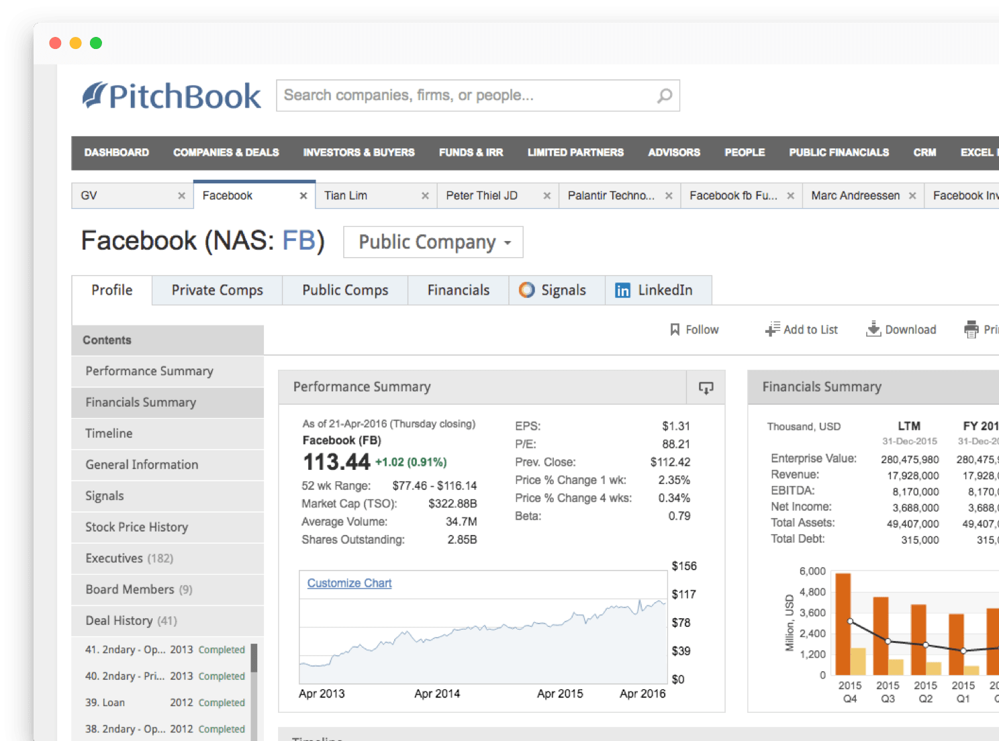
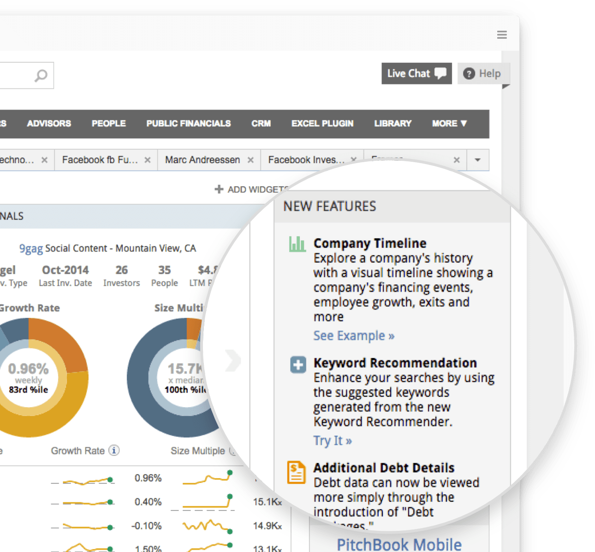
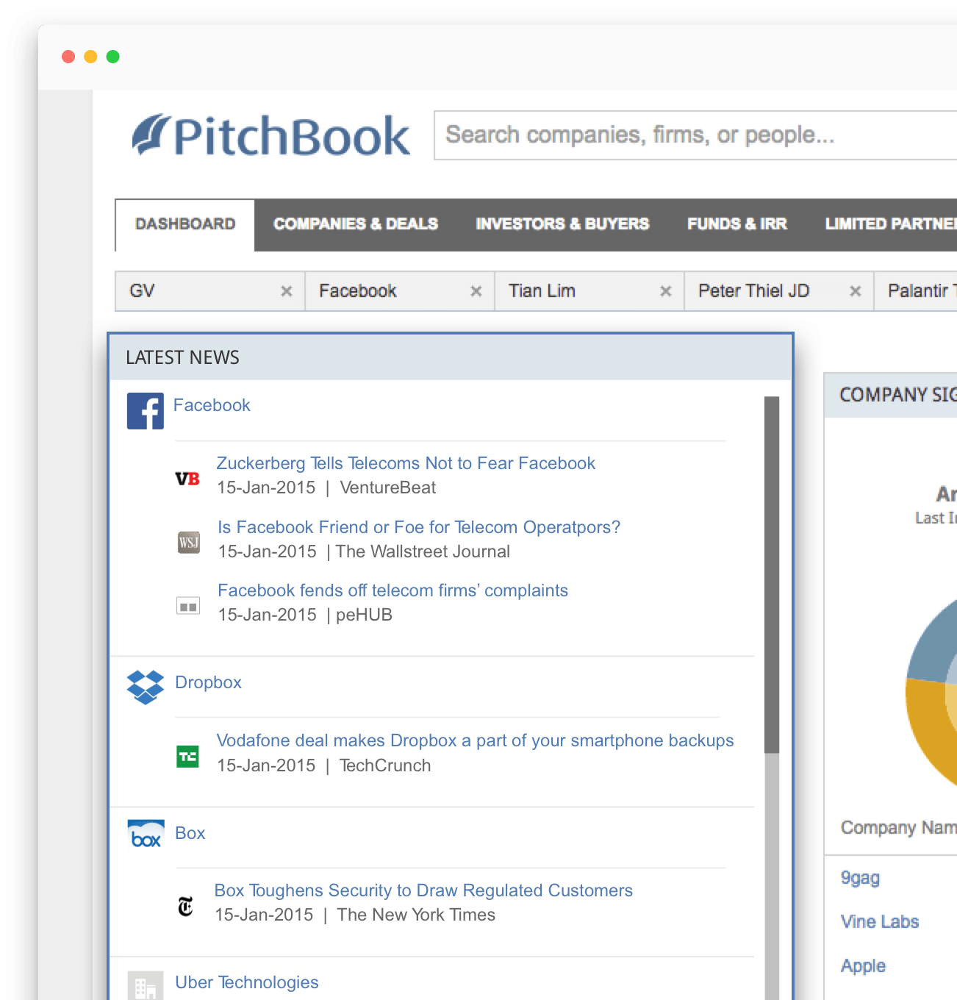
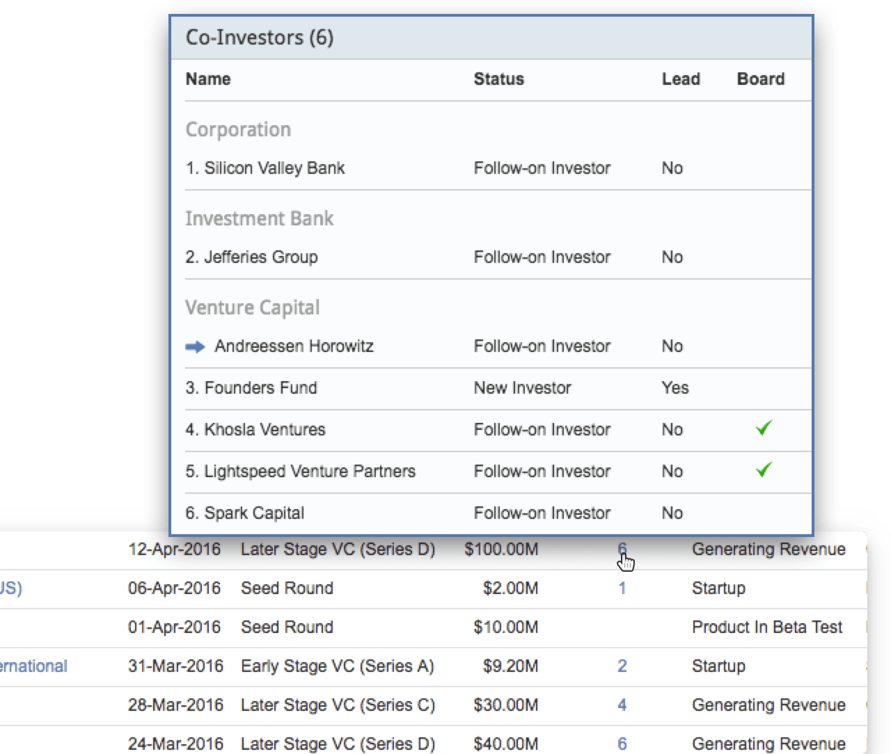
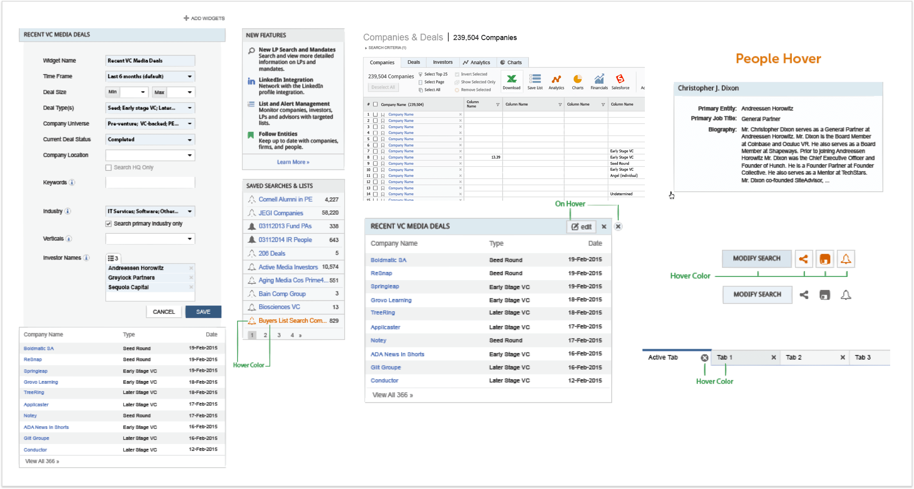

As one of the early designers, I've helped designed various features and witnessed PitchBook's latest $10m series B round.

PitchBook's design process was still at it's infant stages when I first joined.
Over the course of an year, I introduced Invision, Sketch, Zeplin, and Framer to improve the design-development process.
I learned a lot by wearing different hats throughout the production cycle.
Being on a small team, I learned to manage my own projects, conduct researches, create custom illustrations, and many other tasks.
The Private Equity & Venture Capital space is a niche industry with distinct use cases and users.
I took my own time to learn about the different user types and their distinct use cases to help me design.
My first six months I worked on mini features that enhanced the capabilities of the platform.

Goal: Find a way to inform users that the product is continually being updated and improved.
Result: The new features widget displays the latest updates and releases on the dashboard, helping users stay up to date with PitchBook's latest features.

Goal: Find a way to create a widget that constantly updates throughout the day to drive engagement.
Feature: With some research we found one thing that all users do - consume news. As a result, we created a widget that pulls in relevant news from the Internet throughout the day. It made the dashboard more than just a landing page and drove more engagement.

Goal: Provide insightful information by using existing data.
Result: The co-investor hover captures the complicated relationships between startups and VCs. VC firms can use this to gain competitive insights while startups use it to identify potential investors.
A snap shot of the first UI kit I created to help designer work more efficiently and produce consistent designs.

PitchBook is a data provider based in Seattle with regional offices in London and New York City.
PitchBook specializes in researching global M&A, private equity and venture capital investments along with all participating parties, including limited partners, investors, service providers and the professionals involved.
PitchBook's raised a $10.89 million Series B round from Morningstar on April 12, 2016, putting it's valuation at $160 million.